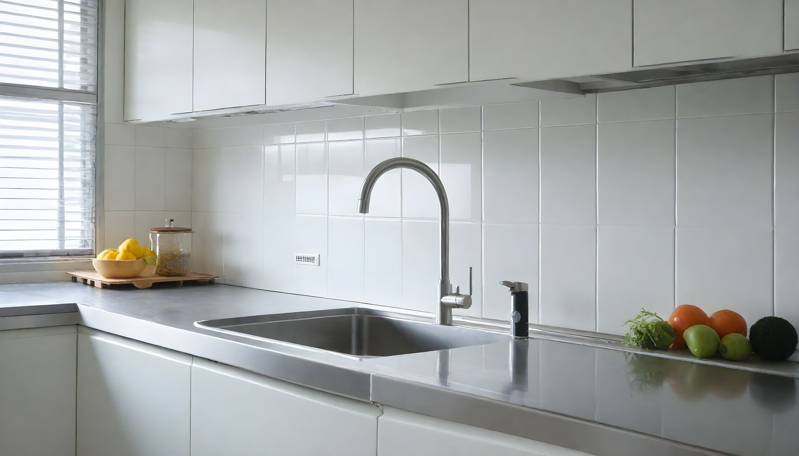

蛇口1つから店舗の配管まで、
職人5人で直します。
水漏れの電話から、汐凪のまわりならおよそ40分で着きます。下請けに出さず、見に来た職人がそのまま直します。

- 水漏れの受付
- 7:00–23:00
- 汐凪のまわりへ
- 40分前後
- 直す職人
- 5人
水まわりの困りごと診断
場所と症状を選ぶと、考えられる原因と急ぎ度、作業の時間と費用の目安が出ます。電話の前に、何が起きていそうかの見当をつけるためのものです。
蛇口の先や根元からポタポタ止まらない
今週中今週中に直せば大丈夫です。水道代が少しずつ上がります。
考えられる原因(多い順)
- 水栓の中のパッキンかカートリッジのすり減り
- レバーの付け根のOリングの傷み
- 作業の時間
- 30〜60分
- 水が止まる時間
- 作業中の15分ほど
費用の目安(税込)
11,000〜20,900円
- 出張費
- 3,300円
- 作業費
- 6,600〜8,800円
- 部品代
- 1,100〜8,800円
- 時間帯の加算
- 0円
電話の前にできることシンク下の止水栓をマイナスドライバーで右に回すと、その蛇口だけ水が止まります。
水栓は10〜15年が入れ替えの目安です。本体ごと替える場合は、本体と工事で2.8万〜6.6万円ほどです。
急ぐ症状です。7:00〜23:00なら今から伺えます。
092-000-0000
この診断の内容は、相談のページの「診断の結果」欄に写ります。この内容で相談する
計算のしかた 費用＝出張費3,300円＋作業費＋部品代＋時間帯の加算(9〜18時は0円、18〜23時と7〜9時は5,500円)。金額は税込です。
下見だけで工事をしなかった場合は、出張費の3,300円だけいただきます。汐凪、鷺ノ浜、若潮台の下見は出張費もかかりません。
水漏れで急ぐとき
電話をもらってから、事務所に戻らず一番近くにいる職人が向かいます。
- 水漏れの受付
- 7:00〜23:00毎日、年末年始も
- 汐凪のまわりに着くまで
- 40分前後葦原と松凪台は60分前後
- 夜と早朝の加算
- 5,500円18〜23時と7〜9時
- 2025年の緊急出動
- 412件そのうち当日中に直ったもの 371件
23時から翌7時までの電話は留守番電話で受け、7時に折り返します。水が噴き出している時は、先に元栓を閉めてください。
元栓は、メーターの横にあります
家の前の地面にある「量水器」と書かれたふたを開けると、メーターの手前に元栓があります。ハンドルを右に回し切ると、家全体の水が止まります。
対応できる工事
金額は戸建てでよくある内容の目安です。件数は2025年の1年間に受けた工事の数です。
-
水漏れと詰まりの修理
蛇口、トイレのタンク、排水の詰まり、地中の漏水調査。多くはその日のうちに終わります。
- 費用
- 1万円前後から
- 日数
- 30分〜半日
1,186件
-
給湯器の入れ替え
ガス給湯器とエコキュート。在庫のある機種なら、電話から2〜3日で付け替えます。号数ごとの費用は下の表です。
- 費用
- 13万〜56万円
- 日数
- 半日〜1日
164件
-
エアコンと換気扇
家庭用の取り付けと入れ替え、浴室乾燥機、台所のレンジフード。古い機器の引き取りもします。
- 費用
- 取付 1.6万円から
- 日数
- 2〜3時間
238件
-
トイレの入れ替え
便器とタンクの交換、和式から洋式への変更。床の排水の位置が違っても、変換の部材で合わせます。
- 費用
- 15万〜35万円
- 日数
- 半日(和式からは2日)
96件
-
浴室とキッチンの入れ替え
在来工法のタイルの浴室からユニットバスへ。キッチンは配管の位置を動かす工事まで一緒に受けます。
- 浴室
- 90万〜180万円
- キッチン
- 60万〜150万円
- 日数
- 3〜6日
39件
-
給排水管の入れ替え
古い鉄管を、さびない樹脂の管に通し直します。家全体でも、水が止まるのは切り替えの2〜3時間だけです。
- 費用
- 戸建て一棟 45万〜120万円
- 日数
- 2〜4日
38件
-
店舗と事務所の設備
飲食店のグリーストラップと厨房の給排水、業務用給湯器、事務所の給湯室。営業時間外や定休日に工事します。
- 費用
- 下見のうえ見積り
- 日数
- 夜間1回〜1週間
31件
給湯器を入れ替える費用
本体、取り外しと処分、配管と配線のつなぎ直し、試運転まで含めた金額です。号数は、水より25℃高いお湯を1分間に何リットル出せるかの数字です。
| 種類 | 号数や容量 | 向いている人数 | できること | 本体と工事(税込) |
|---|---|---|---|---|
| ガス オート | 16号 | 1〜2人 | 湯はり、追い焚き、保温 | 13万〜17万円 |
| ガス オート | 20号 | 2〜3人 | 湯はり、追い焚き、保温 | 15万〜20万円 |
| ガス オート | 24号 | 3〜5人 | 台所とシャワーを同時に使っても温度が落ちにくい | 18万〜24万円 |
| ガス フルオート | 24号 | 3〜5人 | 減った分の自動たし湯、配管の自動洗浄 | 21万〜28万円 |
| エコキュート | 370L | 3〜4人 | 夜の電気でお湯をためる。ガス代がなくなる | 38万〜48万円 |
| エコキュート | 460L | 4〜6人 | 夜の電気でお湯をためる。ガス代がなくなる | 44万〜56万円 |
ガスからエコキュートへ替える時は、200Vの電気工事と基礎の打設が加わり、1日かかります。国や市の補助金の対象になる機種は、申請の書類までこちらで用意します。
古い配管の中で起きていること
1990年ごろまでに建った家の給水管には、亜鉛めっき鋼管(鉄管)が多く使われています。外から見えないまま、内側が少しずつさびで埋まっていきます。
20Aの鉄管の断面
内径およそ22mmの管です。さびのこぶが内側に育つと、水の通り道が細くなり、2階のシャワーの勢いが落ちたり、朝の水が赤くなったりします。
水の通る広さ
水の通る広さ
水の通る広さ
ネジでつないだ部分は管が薄くなっているので、さびが一番早く進み、漏れもここから始まります。割合は、このあたりの家から取り外した管を切って見たおおよその値です。
家の中の管の通り道
道路の下の水道管から、メーターを通って家の中へ入ります。給湯器でお湯になって台所と浴室へ、使った水は床下の排水管から汚水ますへ流れます。
- 給水管(水)メーターから家の中へ。地中の部分が古い鉄管のまま残っていることが多く、漏水調査の半分以上はここです。
- 給湯管(お湯)給湯器から台所と浴室へ。古い家では銅管で、ピンホールと呼ばれる小さな穴が開いて漏れることがあります。
- 排水管台所の油と、浴室の髪と石けんかすが詰まりの原因です。屋外の汚水ますを開ければ、流れ具合が見られます。
入れ替えの時は、床下に新しい管を先に全部通してから一気につなぎ替えるので、水が止まるのは2〜3時間です。工事の手順は「工事の流れ」のページにあります。
管は色で見分けます
入れ替えに使う樹脂の管は青、古い家の給湯の管は銅色です。下見では点検口から管の色と継ぎ目を見て、どこから替えるかを決めます。
給水給湯排水
管の種類と、入れ替えどき
点検口から管の色と継ぎ目を見れば、どの管か見分けがつきます。下見の時に写真を撮ってお見せします。
| 管の種類 | 使われた時期 | 持つ年数 | 起きやすいこと |
|---|---|---|---|
| 亜鉛めっき鋼管(鉄管) | 1990年ごろまで | 20〜30年 | 赤い水、水の勢いの低下、ネジの継ぎ目からの漏れ |
| 塩ビライニング鋼管 | 1980〜2000年ごろ | 30〜40年 | 管の端の継ぎ目だけさびる |
| 銅管(給湯) | 1970〜2000年ごろ | 20〜30年 | ピンホール漏れ、青い水あか |
| 架橋ポリエチレン管、ポリブテン管 | 2000年ごろから | 40年以上 | さびない。いま入れ替えに使っている管です |
工事の流れと、水が止まる時間
設備の工事で一番困るのは、水やお湯が使えない時間です。どの工事でも、止まる時間を先にお伝えします。
半日で終わる工事
例: ガス給湯器の入れ替え
- 到着。給湯器のまわりを養生して、ガスと水を止めます
- 古い給湯器を外します。ここからお湯が止まります
- 新しい給湯器を据えて、配管と配線をつなぎ直します
- 試運転。湯はり、追い焚き、台所の温度を確かめます
- リモコンの使い方の説明。古い給湯器は持ち帰ります
数日かかる工事
例: 戸建ての給水管の入れ替え(延床30坪、4日)
- 1日目床下と壁の点検口を開けて、新しい管を通す道を決めます
- 2日目新しい管を床下に全部通します。古い管はまだそのまま使えます
- 3日目 午前古い管から新しい管へつなぎ替えます。ここで2〜3時間だけ水が止まります
- 3日目 午後水圧をかけて1時間置き、漏れがないか確かめます
- 4日目点検口と、掘った庭の土を元に戻して片付けます
電話から工事の日まで
- 電話か相談のページ症状と、建物の種類を聞きます。急ぎならその日に伺います
- 下見 30分ほど管の種類と、点検口の場所を見ます。汐凪のまわりは無料です
- 見積り2日以内に書面でお渡しします。部品の型番まで書きます
- 工事と支払い終わったあと一緒に確かめてからお支払い。カードも使えます
施工実績
2026年に受けた工事から8件です。日数は作業に入った日から片付けまでです。
| 地区 | 建物 | 工事の内容 | 日数 | 費用(税込) |
|---|---|---|---|---|
| 汐凪 若潮台駅東 | 戸建て 築34年 | 給水管を鉄管から架橋ポリエチレン管へ全面入れ替え | 3日 | 78万円 |
| 鷺ノ浜 | マンション 8階 | ガス給湯器 24号フルオートの入れ替え | 半日 | 26万円 |
| 汐凪三丁目 | ラーメン店 | グリーストラップの入れ替えと、厨房の排水管の勾配の直し | 2日 定休日と夜間 | 64万円 |
| 若潮台 | 戸建て 築22年 | タイルの浴室からユニットバス(1616)へ | 5日 | 138万円 |
| 鷺ノ浜二丁目 | 戸建て 築41年 | 地中の給水管の漏水調査と、漏れた所の修理 | 当日 | 3.9万円 |
| 葦原 | 事務所 3階 | 業務用エアコン2台と換気扇の入れ替え | 2日 土日 | 112万円 |
| 松凪台 | 戸建て 築18年 | ガス給湯器からエコキュート460Lへ | 1日 | 52万円 |
| 青砂 | アパート 6戸 | 各戸の和式トイレを洋式へ。床の排水の位置も変更 | 9日 | 186万円 |
工事が終わったお客様から
朝の水が赤いのが気になって電話したら、メーターの所で古い管を少し切って、中を見せてくれました。こんなに細くなっていたのかと驚きました。入れ替えの間も、水が止まったのは昼前の2時間くらいで、普段どおり暮らせました。
店を閉めた夜10時から始めて、翌朝の仕込みに間に合わせてくれました。排水の流れが良くなって、においの苦情もなくなりました。
給湯器の型番を電話で伝えたら、2日後に付け替えに来てくれました。見積りの紙に部品の型番まで書いてあって安心できました。
資格と会社のこと
職人5人の設備工事店です。電話を受けるのも、下見に行くのも、工事をするのも同じ5人です。
資格と指定
- 福岡市指定給水装置工事事業者第0000号
- 福岡市排水設備指定工事店第0000号
- 建設業許可 管工事業福岡県知事許可(般-10)第000000号
- 給水装置工事主任技術者 3人水道の管を道路の本管からつなぐ工事に要る国家資格
- 排水設備工事責任技術者 3人下水道へつなぐ排水の工事に要る資格
- 1級管工事施工管理技士 1人2級管工事施工管理技士 2人
- 第二種電気工事士 2人エアコンと給湯器の電気工事まで自分たちでします
会社概要
- 屋号
- ミズモト設備
- 代表
- 水本 達郎(1級管工事施工管理技士)
- 所在地
- 福岡市 汐凪二丁目(事務所と資材置き場)
- 創業
- 1998年
- 人数
- 職人5人、事務1人
- 車両
- 工事車両4台(うち1台に高圧洗浄機)
- 電話
- 092-000-0000
工事の相談 8:00〜19:00、水漏れ 7:00〜23:00 - 支払い
- 現金、振込、クレジットカード
対応地域(福岡市内)と、着くまでの目安
- 汐凪、鷺ノ浜、若潮台
- 30〜40分
- 葦原、松凪台
- 40〜60分
- 青砂、礫ヶ丘
- 40〜60分
- 浜楓とその先
- 60分前後
よくある質問
電話でよく聞かれることです。
下見と見積りにお金はかかりますか
汐凪、鷺ノ浜、若潮台の下見と見積りは無料です。ほかの地域は出張費3,300円をいただきますが、そのまま工事をお任せいただければ工事代に含めます。
マンションや賃貸でも頼めますか
頼めます。賃貸の場合は、費用を持つのが大家さんか入居者かで手順が変わるので、先に管理会社へ連絡してください。管理会社からのご依頼も受けています。
地中で漏れていた分の水道代はどうなりますか
地中や壁の中など、気づけない所の漏れを指定工事店が直した場合、水道料金の減額を申請できることがあります。修理の証明の書類はこちらで書きます。
給湯器のメーカーや機種を選べますか
選べます。今の機種の型番を伝えていただければ、同じ大きさで付け替えられる候補を3つほど、金額つきでお出しします。
店の営業中に工事はできますか
水やお湯を止める作業は、閉店後か定休日に行います。夜間の工事は、昼の作業と同じ金額です。
工事のあとに不具合が出たら
部品の交換と配管の工事は1年、給湯器はメーカー保証に加えて当店の工事保証を5年つけています。保証の間の呼び出しは出張費もいただきません。
工事の相談をする
内容を送っていただければ、その日のうちにお電話します。下見は汐凪のまわりなら無料です。急ぐ水漏れは電話のほうが早く伺えます。